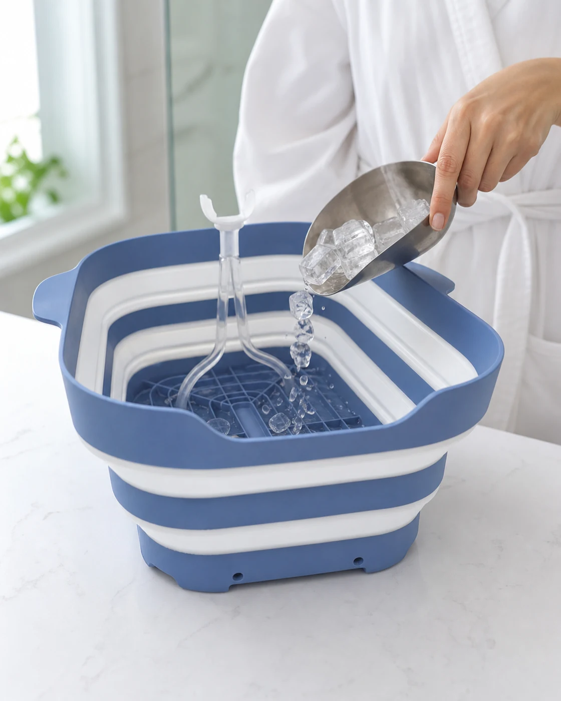
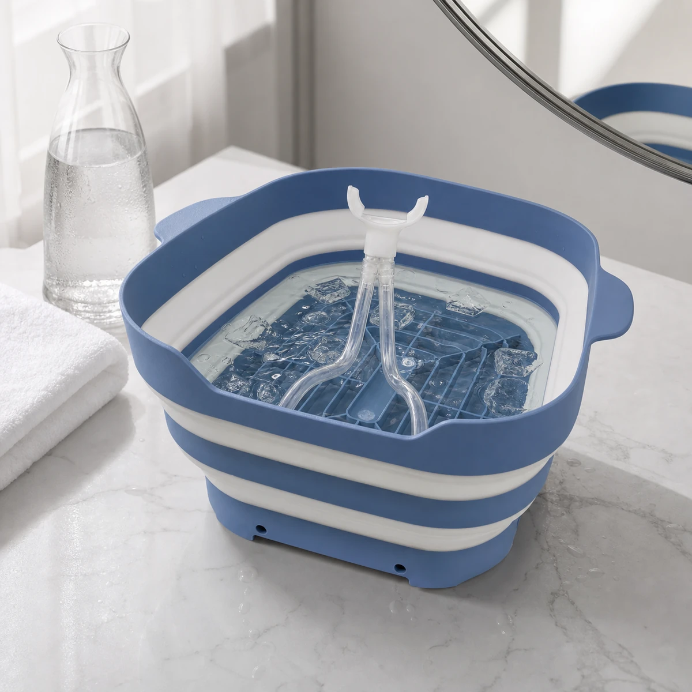
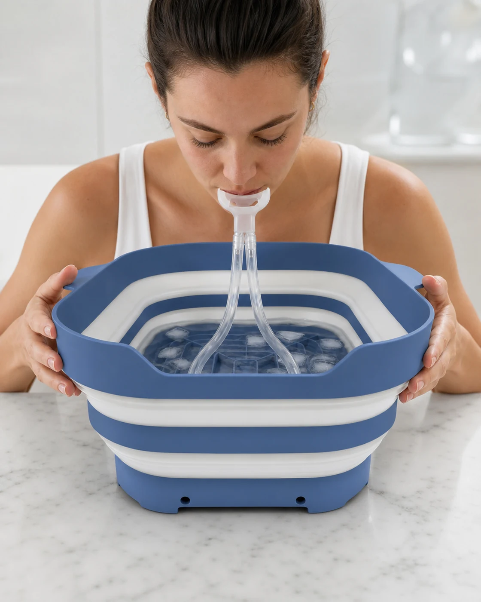
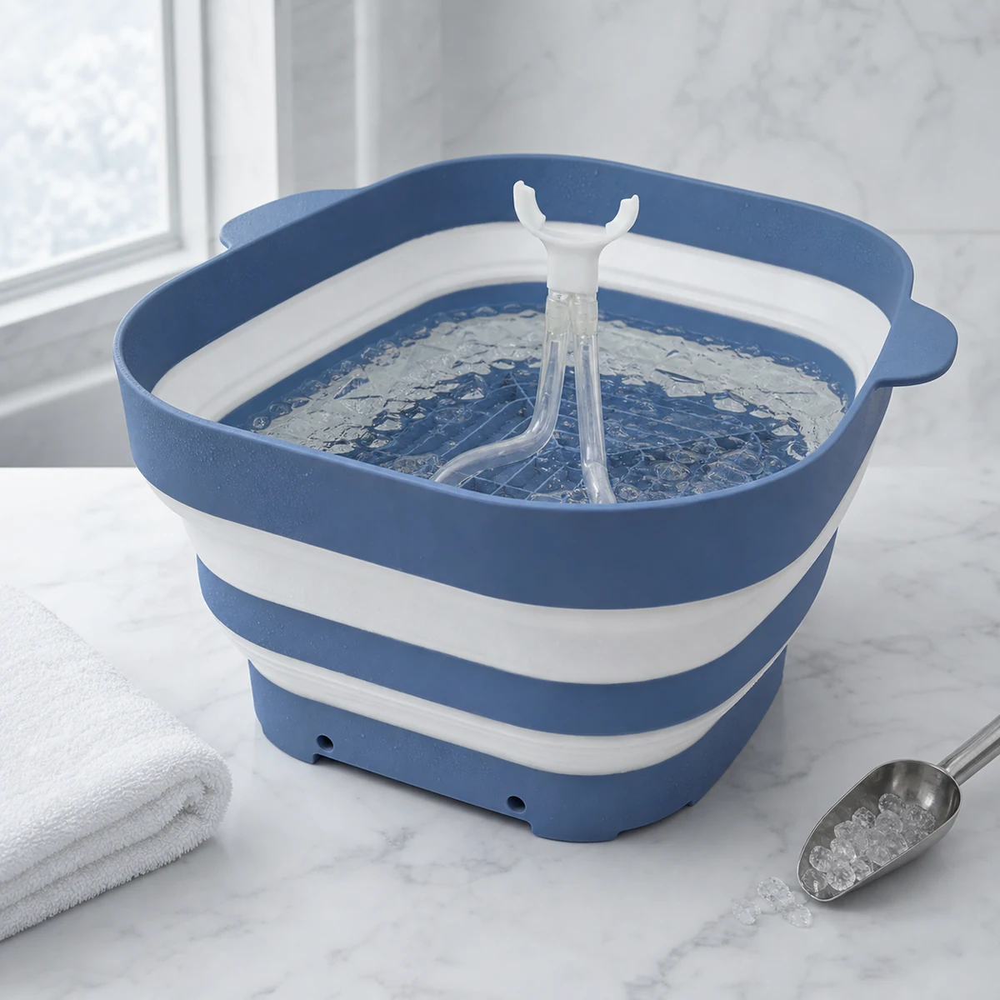

01
Prepare
Open the basin, place it on a stable surface, and begin with cool water at a comfortable temperature.
Facial cold-water ritual
A refined facial bath for cold water, ice and steady breathing. Designed to sit naturally beside the rest of your morning beauty ritual.
USD 49.90 reference price
When your routine moves faster than you do
Between the rush, the screen, and a routine on autopilot, caring for yourself can become one more task.

The moment you want back
RX SUBZERO turns cold water into a brief, deliberate facial pause before you continue with the products you already use.
Why RX SUBZERO exists
RX SUBZERO was created to turn a familiar practice into a simple, elegant experience designed around everyday wellbeing.
What changes is the ritual
A simple sensory experience, with an object designed to fit naturally into your routine.
Contact with cold water creates a clear sensory moment at the start of your routine.
It invites you to reserve a few minutes for your face without adding a complicated routine.
Pat dry gently and continue with the products already in your routine.
Its blue-and-white form keeps the ritual organized and visually calm.
A composed morning practice
The product keeps the process visually calm: one basin, one breathing tube and a short ritual at your own pace.

Open the basin, place it on a stable surface, and begin with cool water at a comfortable temperature.

Position the mouthpiece, keep your breathing steady, and approach the water in brief, comfortable intervals.

Empty, rinse with mild soap and water, let every part air-dry fully, then collapse the basin for storage.

Made for the ritual
The steel-blue basin, clear dual tube and integrated blue base form one recognizable system. It opens for use, folds for storage and keeps the cold-water setup in one place.
The essentials
A straightforward look at how the product fits into a beauty routine.
The product format shown includes the collapsible basin and its clear dual breathing tube with white mouthpiece.
Use it on clean skin before the leave-on skincare products in your usual routine. Dry your face gently before continuing.
Empty after use, rinse the basin and breathing tube with mild soap and water, then let both air-dry fully before storing.
No. Begin with cool water and brief intervals. Add ice gradually only if your skin and comfort level respond well.
Your RX SUBZERO ritual
A collapsible system with a clear dual breathing tube, created to make preparation and use feel more ordered.
USD 49.90 reference price
Make room for yourself
Begin with cool water, progress gradually, and turn a few minutes of your morning into a deliberate act of care.
Purchase available soon